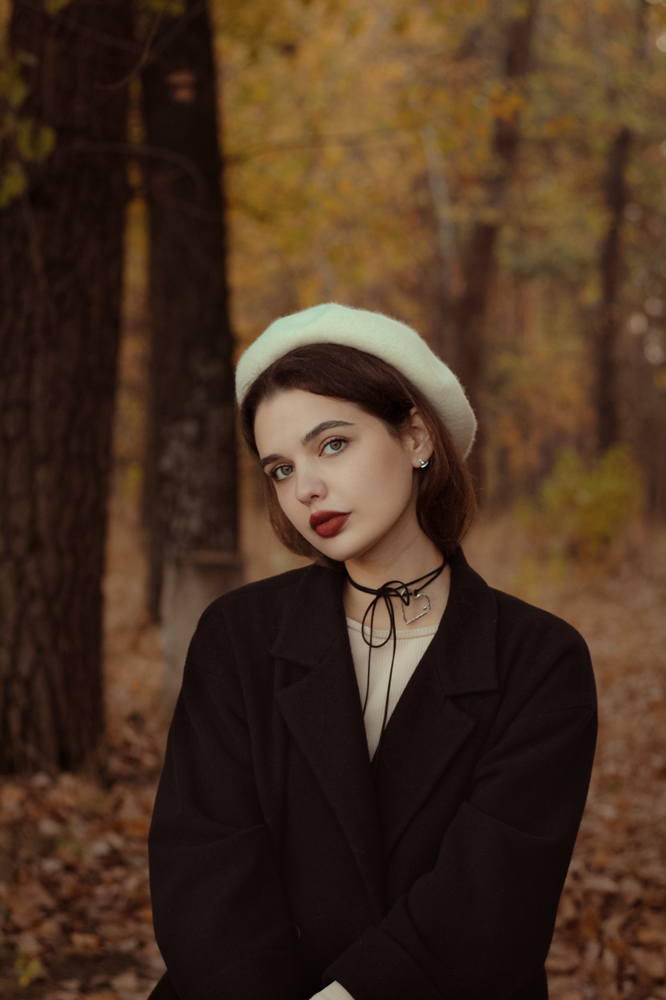

Я - Аня. Менше, ніж пів року тому я відкрила для себе нове захоплення - фотографію.
За цей невеличкий термін я зрозуміла, що фото - це моє покликання. Адже, фотографуючи, я маю можливість зафіксувати найкращі моменти життя людей, які стають вічними.
Моє портфоліо включає в себе різні стилі, але найбільше я працювала в області креативних індивідуальних зйомок. Також обожнюю парні та сімейні фотосесії. Завдяки моїй роботі, мої клієнти можуть зберегти їхні незабутні спогади назавжди.
Також я практикую зйомку контенту для різних комерційних сторінок і звісно ж планую співпрацю з брендами.